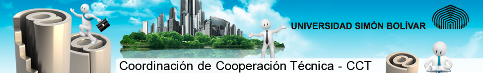
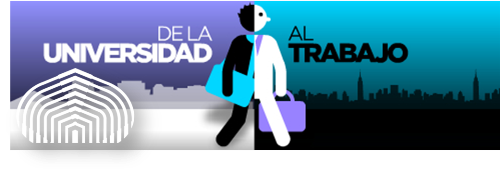

Pasantias Empresariales
|
 |
|
Una pasantía, es un programa que permite a los estudiantes adquirir experiencia práctica de trabajo con una empresa u organización. Un programa de prácticas varía ampliamente dependiendo de la carrera cursada por el estudiante, el tipo de actividad que desarrolla la empresa que oferta la pasantía, cuándo y dónde se llevará a cabo, y qué tipo de compensación podría percibir el estudiante. Este portal ofrece una guía para las organizaciones empresariales y la propia comunidad académica de la Universidad Simón Bolívar sobre el Programa de Pasantías, sus beneficios y responsabilidades. La Universidad Simón Bolívar a través de la Coordinación de Cooperación Técnica ofrece tres tipos de pasantías: Con una pasantía el estudiante realiza un conjunto de actividades académicas, de contenido práctico, que contribuyen a la formación profesional del estudiante. En el caso de la pasantía estas actividades sustituyen el trabajo final de grado Durante este tiempo, el estudiante estará dedicado exclusivamente al trabajo industrial y no le es permitido cursar ninguna otra asignatura. Las pasantías buscan relacionar al estudiante con el ámbito de trabajo, permitiéndole una comprensión del mismo, así como de la naturaleza de las actividades que están en capacidad de realizar los profesionales de su especialidad. Por otra parte, las pasantías le brindan al sector productivo la posibilidad de realizar proyectos y estudios de gran calidad, además de conocer la potencialidad y capacidades de los futuros profesionales. Adicionalmente, le brindan una gran oportunidad a los profesores de la universidad para conocer el ambiente industrial y fomentar relaciones en el ámbito técnico-científico-académico con las empresas. El Pasante es un estudiante que realiza una práctica profesional, no es un trabajador. En tal sentido la relación existente entre el pasante y la empresa no está regulada por la Ley Orgánica del Trabajo, por lo que no goza de los derechos y beneficios de la Ley. Puede recibir una ayuda económica, lo cual no se califica como salario. Convenios de Confidencialidad deben ser firmados de forma interinstitucional, los estudiantes no tienen la potestad de firmar dichos acuerdos. En general, la Coordinación de Cooperación Técnica y Desarrollo Social coordina el trabajo interactivo entre el estudiante, el Tutor Académico (USB) y el Tutor Industrial (Entidad de Trabajo). Las carreras que participan en el programa de pasantías son las siguientes: |